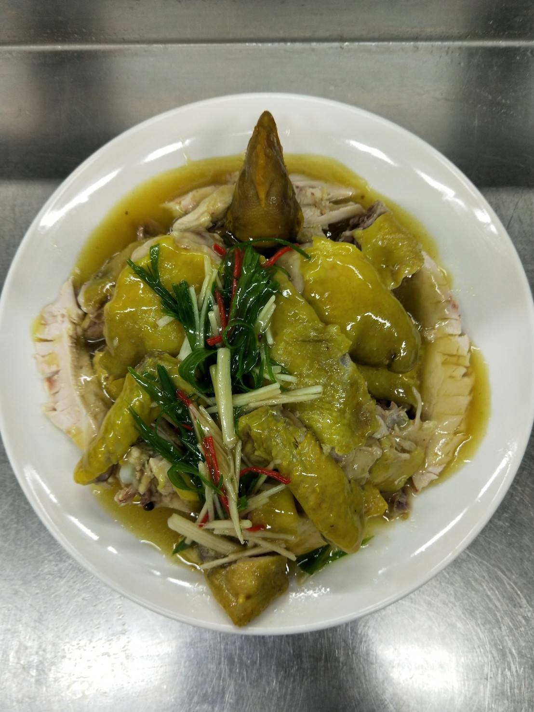

薑切絲，蔥切蔥絲，辣椒切絲
煮水七分滿，加四大匙海鹽，剁雞腳，少許蔥切段，其餘拍一拍，薑切片（放入湯鍋）加米酒兩大匙，
加入薑黃粉兩大匙，白胡椒粒一大匙，水滾後下雞，滾後關小火，鋁箔紙蓋住（煮27分）
高湯：雞粉一匙，糖1.5匙，胡椒粉1/4匙，鹽1/4的一半
高湯200g，加入調味料，勾芡，沙拉油1.5匙
剁雞：雞頭取下，切下雞翅.雞腿，切雞屁股，切雞胸，雞胸去骨肉切塊，雞柳切邊不切斷，
斜刀切帶骨肉，雞腿切下肉，骨頭切塊，雞翅切對半切，雞頭切下巴，蔬菜絲鋪上面，淋上醬汁

紅燒蝦仁羹
砂鍋明蝦粉絲堡
桂花炒三絲
心得